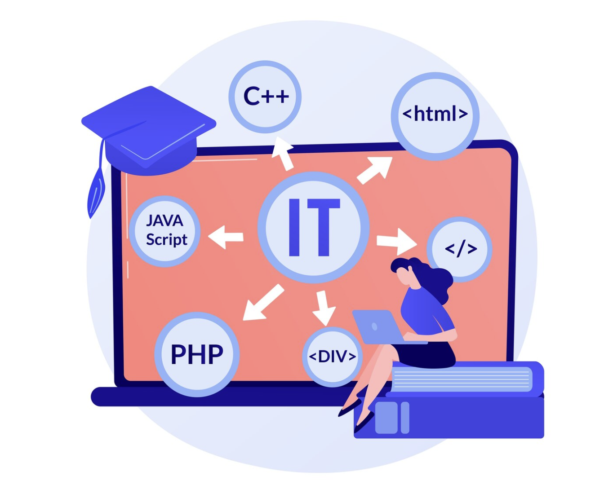

Desarrollo Full-Stack para perfiles Junior
En el dinámico mundo del desarrollo web, el rol de desarrollador Full Stack ha emergido como una carrera codiciada, ofreciendo la promesa de dominar tanto el frontend como el backend. Para los perfiles junior, esta trayectoria puede parecer a la vez emocionante y desalentadora, dada la amplia gama de habilidades y tecnologías que deben aprenderse. Este artículo explora el camino hacia el desarrollo Full Stack para perfiles junior, brindando insights sobre cómo navegar estos desafíos y capitalizar las oportunidades en este campo.
Entendiendo el Rol Full Stack
Un desarrollador Full Stack es aquel que tiene la capacidad de trabajar tanto en el frontend (la parte de la aplicación que interactúa con el usuario) como en el backend (el servidor, la aplicación y la base de datos). Esta dualidad requiere un conocimiento profundo de varias tecnologías y la habilidad de ver el proyecto desde una perspectiva integral.Para los Perfiles Junior: ¿Por Dónde Empezar?
Para un perfil junior, el primer paso es construir una base sólida en las tecnologías fundamentales del desarrollo web:
- Frontend: Comprender HTML, CSS y JavaScript es esencial. Estas son las piedras angulares que permiten crear interfaces de usuario interactivas y atractivas
- Backend: Aprender un lenguaje de programación del lado del servidor, como Python, Ruby, Node.js o Java, junto con los fundamentos de las bases de datos, tanto SQL como NoSQL.
Una vez establecida esta base, es crucial familiarizarse con los sistemas de control de versiones como Git, y luego proceder a explorar frameworks más avanzados (React, Angular o Vue para frontend; Express.js, Django, o Ruby on Rails para backend) que facilitan el desarrollo de aplicaciones complejas.
Puede que todo esto te parezca mucho, pero la clave es ir poco a poco. Céntrate en una tecnología, entiéndela y domínala, y pasa a la siguiente. Tratar de hacer todo de golpe sólo te va a conducir a la frustración. Si sigues este consejo, te aseguro que acabarás antes de lo que crees.
Desarrollando un Mindset Full Stack
Para los desarrolladores junior, adoptar un mindset Full Stack significa no solo aprender una variedad de tecnologías sino también entender cómo encajan dentro del ciclo de desarrollo de software. Esto incluye:
- Pensamiento Integral: Ver el proyecto como un todo, entendiendo tanto las necesidades del usuario final como los requisitos técnicos.
- Resolución de Problemas Ser capaz de identificar problemas y encontrar soluciones tanto en el frontend como en el backend.
- Aprendizaje Continuo: El campo del desarrollo web está en constante evolución, lo que requiere un compromiso continuo con el aprendizaje y la adaptación.

Estrategias para el Éxito
Para los perfiles junior aspirantes a convertirse en desarrolladores Full Stack, aquí hay algunas estrategias clave para el éxito:
- Especialización Progresiva: Comienza especializándote en una área, ya sea frontend o backend, y gradualmente expande tus habilidades al otro lado. Esto puede hacer que el proceso de aprendizaje sea más manejable.
- Proyectos Prácticos: La teoría es importante, pero la práctica lo es aún más. Trabaja en proyectos personales o contribuye a proyectos de código abierto para ganar experiencia práctica.
- Networking y Mentoría: Conéctate con otros desarrolladores Full Stack y busca mentores que puedan proporcionarte orientación y apoyo.
- Educación Continua: Aprovecha los recursos en línea, desde tutoriales hasta máster especializados, para construir y actualizar tus habilidades.
Desafíos y Oportunidades
Mientras que el camino hacia el desarrollo Full Stack puede estar lleno de desafíos, desde la abrumadora cantidad de tecnologías hasta el síndrome del impostor, las oportunidades son igualmente vastas. Los desarrolladores Full Stack están en alta demanda, ya que pueden navegar por todas las capas de la aplicación y ofrecer soluciones completas, lo que los hace extremadamente valiosos para las empresas y proyectos de todos los tamaños.
Máster de Desarrollo Full-Stack de Conquer Blocks
Para los perfiles junior, el viaje hacia el desarrollo Full Stack es tanto desafiante como gratificante. A través de la construcción de una base sólida, el compromiso con el aprendizaje continuo y la adopción de un enfoque práctico, los aspirantes a desarrolladores Full Stack pueden superar los desafíos y aprovechar las numerosas oportunidades que este campo tiene para ofrecer. Con la mentalidad y estrategias correctas, el desarrollo Full Stack no es solo una meta alcanzable, sino una vía apasionante hacia una carrera rica y diversa en tecnología.
En Conquer Blocks hemos creado un Máster en Desarrollo Full-Stack donde impartimos todos los conocimientos necesarios para abrirte paso y adentrarte en esta industria tan demandada. No importa cuál sea tu punto de partida, porque comenzamos desde el más absoluto cero y te acompañamos en todo el proceso.
Si quieres saber más información, te invito a que hagas click aquí para agendar una entrevista de acceso gratuita con con un miembro del equipo Conquer, el cual valorará conjuntamente contigo, si eres un alumno apto para formar parte de nuestro máster.